خلاصه. صاحب یک محصول کنترل از راه دور روی آمازون میخواهد بداند با منابع محدودش اول کدام جنبهی محصول را بهبود دهد. هدف پروژه این است که از روی نقدهای ۳ ماه اخیر یک محصول، جنبههایی را که بیشترین ارتباط را با کاهش امتیاز دارند، بر پایهی شواهد رتبهبندی کند. در این فاز:
تصمیمی که پشتیبانی میشود. صاحب یک محصول روی آمازون با منابع محدود (زمان مهندسی، بودجهی تأمین قطعه) باید انتخاب کند اول کدام جنبهی محصول را بهبود دهد: باتری، دوام بدنه، برد کنترل یا چیز دیگر. امروز این انتخاب معمولاً با خواندن چند نقد اخیر یا با شمردن پرتکرارترین شکایت انجام میشود. این پروژه میخواهد آن را با شواهد قابل سنجش جایگزین کند.
سؤال اصلی. از روی نقدهای ۳ ماه اخیر یک محصول، کدام جنبههای محصول بیشترین ارتباط را با کاهش امتیاز مشتریان دارند، و رفع شکایت از هر جنبه با چه میزان افزایش امتیاز پیشبینیشده همراه است؟
خروجی برای صاحب محصول. فهرست رتبهبندیشدهی جنبهها. برای هر جنبه سه چیز گزارش میشود: سهم نقدهایی که از آن شکایت کردهاند، افزایش امتیاز برآوردی در صورت رفع شکایت، و چند نقد نمونه بهعنوان شاهد.
| مفهوم | تعریف در این پروژه |
|---|---|
| واحد پیشبینی | یک نقد (پیشبینی امتیاز ستارهای آن) |
| واحد گزارش | یک محصول در یک بازهی ۳ ماههی تقویمی، با دستکم ۲۰ نقد |
| واحد استخراج جنبه | یک جمله از نقد (یک نقد ممکن است دربارهی چند جنبه باشد) |
| واحد تقسیم داده | زمان (بخش ۱۱) |
| متغیر هدف | امتیاز ۱ تا ۵ بهصورت عدد؛ تشخیص نقد منفی (۱ و ۲ ستاره) بهعنوان هدف مکمل |
ارتباط، نه علیت. داده مشاهدهای است و امکان آزمایش نداریم. خروجی پروژه «اولویتبندی بر پایهی شواهد» است، نه تضمین اینکه رفع یک جنبه امتیاز را بالا میبرد. روش ارزیابی (بخش ۱۲) شاهد سازگاری با واقعیت جمع میکند، نه اثبات علّی.
| مورد | توضیح |
|---|---|
| منبع | Amazon Reviews'23، آزمایشگاه McAuley، دانشگاه UC San Diego (Hou et al., 2024, arXiv:2403.03952) |
| شیوهی جمعآوری | جمعآوری از صفحههای عمومی آمازون آمریکا در ۲۰۲۳. نقدها را خود کاربران به انتخاب خودشان نوشتهاند |
| نوع داده | مشاهدهای؛ هیچ آزمایش کنترلشدهای (مثل آزمون A/B) در کار نبوده است |
| فایلهای استفادهشده | دستهی Toys_and_Games: فایل نقدها (۱۶٬۲۶۰٬۴۰۶ نقد، ۱٫۹۵ گیگابایت) و فایل اطلاعات محصول (۸۹۰٬۸۷۴ محصول، ۰٫۶۶ گیگابایت) |
| بازهی زمانی دسته | سهماههی چهارم ۱۹۹۸ تا سهماههی سوم ۲۰۲۳ |
| واحد مشاهده | فایل نقدها: یک کاربر دربارهی یک محصول در یک زمان. فایل اطلاعات: یک محصول (شناسهی parent_asin) |
| ثبت دانلود | اسکریپت src/download_data.py با قابلیت ادامهی دانلود قطعشده؛ اندازه و اثر انگشت SHA-256 هر فایل در data/download_manifest.json ثبت شده است |
| مجوز | برای داده مجوز صریحی منتشر نشده است (مجوز MIT مخزن فقط کد را پوشش میدهد). استفاده فقط آموزشی است، بدون بازنشر و با ارجاع به مقاله |
محدودیتهای اصلی تولید داده. (۱) خودگزینی: فقط کسانی که میخواهند نقد مینویسند، و کاربران خیلی راضی یا خیلی ناراضی بیشتر مینویسند. نتایج به نقدنویسها تعمیمپذیرند، نه به همهی خریداران. (۲) ستونهای جمعآوریشده در ۲۰۲۳: میانگین امتیاز محصول، تعداد امتیازها و قیمت در زمان جمعآوری ثبت شدهاند، نه در زمان نوشتن نقد (بخش ۱۱). (۳) ماههای پایانی ناقص: تعداد نقدهای ۲۰۲۳ ماهبهماه افت میکند (بخش ۱۰).
زیرمجموعه محصولات کنترل از راه دور است: محصولاتی که در درخت دستهبندی خود آمازون (فیلد categories) زیر شاخهی Remote & App Controlled یا Remote Control قرار دارند. عبارت دقیق در configs/config.yaml ثبت شده و این تصمیم پیش از هر مدلسازی (۲۳ مهر) قفل شده است.
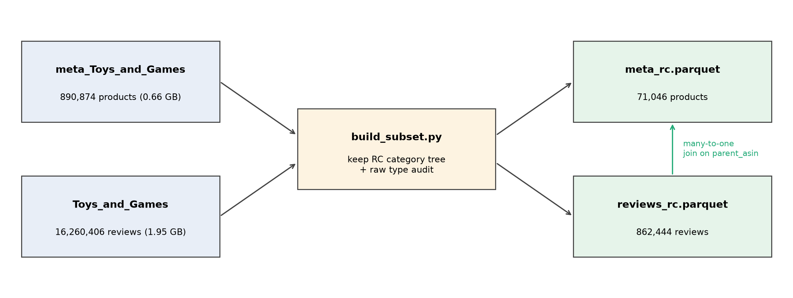
| فایل | ردیف | ستون | ستونهای کلیدی |
|---|---|---|---|
| نقدها (reviews_rc.parquet) | ۸۶۲٬۴۴۴ | ۱۱ | امتیاز، عنوان و متن نقد، زمان، شناسهی کاربر و محصول، رأی «مفید بود»، خرید تأییدشده، تصویر |
| اطلاعات محصول (meta_rc.parquet) | ۷۱٬۰۴۶ | ۱۷ | عنوان، درخت دسته، قیمت، فروشگاه، ویژگیها، تصویر و ویدیو، میانگین و تعداد امتیاز |
امتیاز، زمان و شناسهی محصول برای همهی نقدها کاملاند و هیچ مقدار ناممکنی (امتیاز بیرون از ۱ تا ۵، زمان پس از جمعآوری، قیمت صفر یا منفی) پیدا نشد. جدول کامل تصمیمها در reports/phase1/quality_decisions.csv است:
| مشکل | تعداد | تصمیم | دلیل |
|---|---|---|---|
| نقد کاملاً تکراری (همان کاربر، محصول و ثانیه) | ۱۰٬۶۹۵ | حذف (نگهداشتن نسخهی اول) | خطای جمعآوری است، نه نظر دوم |
| همان کاربر و متن روی محصول دیگر | ۱۵٬۵۷۹ | نگهداشتن، علامتگذاری | ممکن است یک نقد روی محصولات خواهر باشد؛ در فاز ۲ بررسی میشود |
| متن بلند یکسان از کاربران مختلف | ۱۰٬۳۶۰ | نگهداشتن، علامتگذاری | ممکن است قالب یا اسپم باشد؛ حذف بدون خواندن زود است |
| همان کاربر و محصول، زمان متفاوت | ۱٬۳۷۸ | نگهداشتن، علامتگذاری | میتواند بهروزرسانی واقعی پس از استفادهی بیشتر باشد |
| متن خالی | ۱٬۲۲۶ | فقط در تحلیل امتیاز | امتیاز همچنان اطلاعات معتبر است |
| متن بسیار کوتاه (۱ تا ۲۰ نویسه) | ۹۲٬۸۳۳ | نگهداشتن | «Great!» نظر واقعی است ولی جنبهای ندارد |
| نشانهگذاری فنی در متن (HTML، کد ویدیو) | ۱۱۲٬۲۵۴ | پاکسازی (src/text_utils.py) | زبان مشتری نیست و مدل متنی را گمراه میکند |
| قیمت گمشده (محصول) | ۳۴٬۳۱۳ | نگهداشتن؛ بخش ۶ | گمشدگی تصادفی نیست |
| قیمت پرت (بیش از ۱٬۰۰۰ دلار) | ۷۴ | نگهداشتن؛ لگاریتم قیمت | بیشتر واقعیاند (پهپاد DJI Inspire)؛ چند مورد دستهی غلط دارند (یک ترازوی آزمایشگاهی) |
| رأی «مفید بود» پرت | ۸۵۴ | نگهداشتن؛ هرگز ویژگی مدل نیست | پس از نوشتن نقد جمع میشود (نشت) |
| کاربران پرنقد (دستکم ۵۰ نقد) | ۱۲۱ | نگهداشتن، علامتگذاری | بیشتر علاقهمند جدیاند؛ چند نفر الگوی مشکوک دارند (مثلاً ۱۱۱ نقد بسیار کوتاه در دو سال) |
پس از حذف تکراریهای کامل، ۸۵۱٬۷۴۹ نقد میماند. همهی تحلیلهای بعدی روی همین نسخه انجام شدهاند.
| وجه | درصد نقدها | نکته |
|---|---|---|
| متن نقد | ۹۹٫۹٪ | وجه اصلی |
| امتیاز، زمان، زیرشاخهی محصول | ۱۰۰٪ | کامل |
| قیمت محصول | ۶۲٪ | ۵۲٪ محصولات؛ محصولات پرنقد بیشتر قیمت دارند |
| تصویر نقد | ۸٪ | به سال وابسته است |
| تصویر محصول | ۱۰۰٪ | برای همهی نقدهای یک محصول یکسان است |
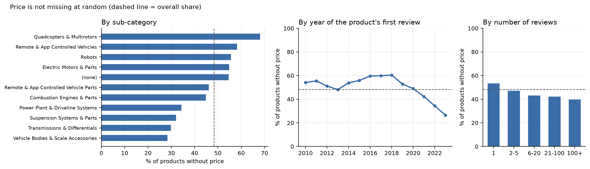
تفسیر گمشدگی قیمت. فرضیه این است که قیمت در ۲۰۲۳ ثبت شده و محصولاتی که دیگر فروخته نمیشدند قیمتی نداشتهاند. تصمیم: محصولات بیقیمت حذف نمیشوند، چون حذف آنها داده را به سمت محصولات جدید و پرفروش کج میکند. «نداشتن قیمت» بهشکل یک ویژگی جدا وارد مدل میشود و در فاز ۳ مدل با و بدون ویژگیهای قیمت مقایسه میشود (خطر نشت، بخش ۱۱).
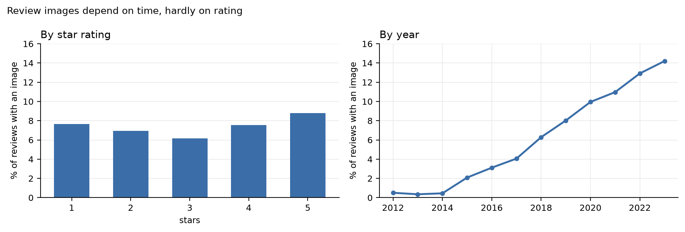
تصمیم وجهها: متن نقد (وجه اصلی) + زمان + اطلاعات ساختیافتهی محصول (زیرشاخه، قیمت همراه با نشانگر گمشدگی، فروشگاه). تصویر نقد کنار گذاشته شد، چون فقط ۸٪ نقدها تصویر دارند و مدلی که از آن استفاده کند ممکن است «سال نقد» را بهجای کیفیت محصول یاد بگیرد. تصویر محصول اگر وقت بماند در فاز ۳ بهعنوان آزمایش تکمیلی بررسی میشود. ارزش افزودهی هر منبع با مقایسهی مدلهای «فقط متن»، «فقط ساختیافته» و «ترکیبی» سنجیده میشود.
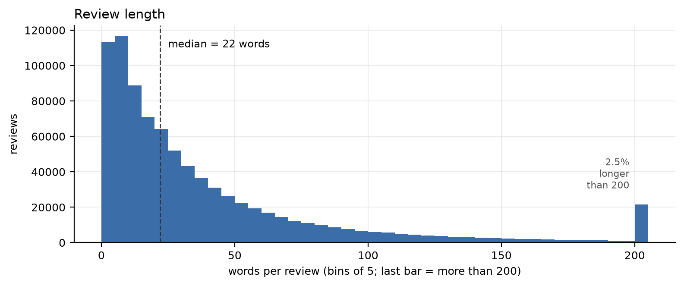
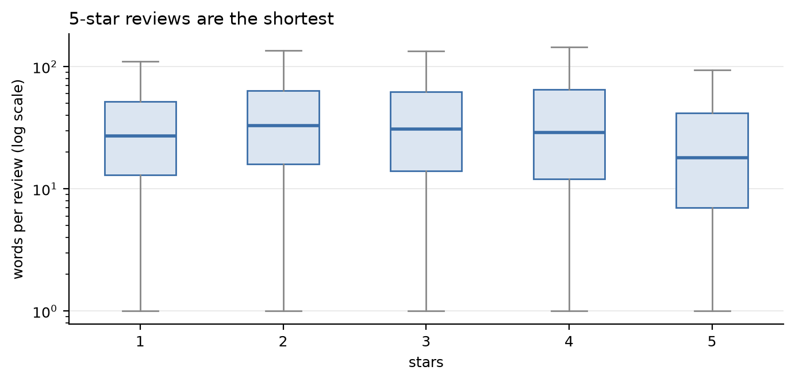
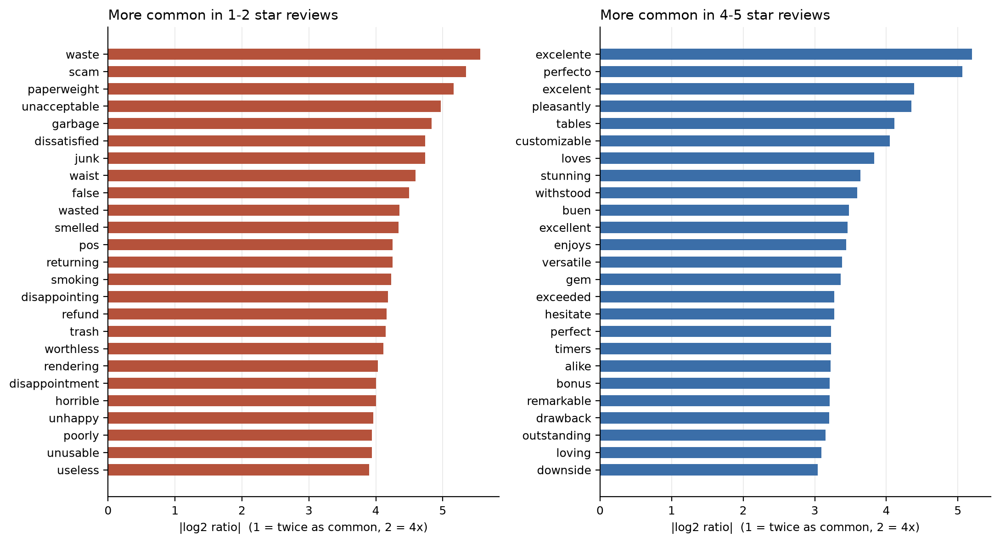
یافتهی کلیدی برای فاز ۲. کلمهی battery در ۱۳٪ نقدهای منفی و ۱۲٪ نقدهای مثبت آمده است. «battery lasts long» و «battery dies fast» هر دو این کلمه را دارند. یعنی صرف نام بردن از یک جنبه چیزی دربارهی رضایت نمیگوید و علاوه بر تشخیص جنبه، باید جهت نظر دربارهی همان جنبه را هم استخراج کنیم. از میان کلمات جنبه، broke (۷ برابر بیشتر در نقدهای منفی)، motor، propeller و signal با نارضایتی همراهاند و durable و price با رضایت.
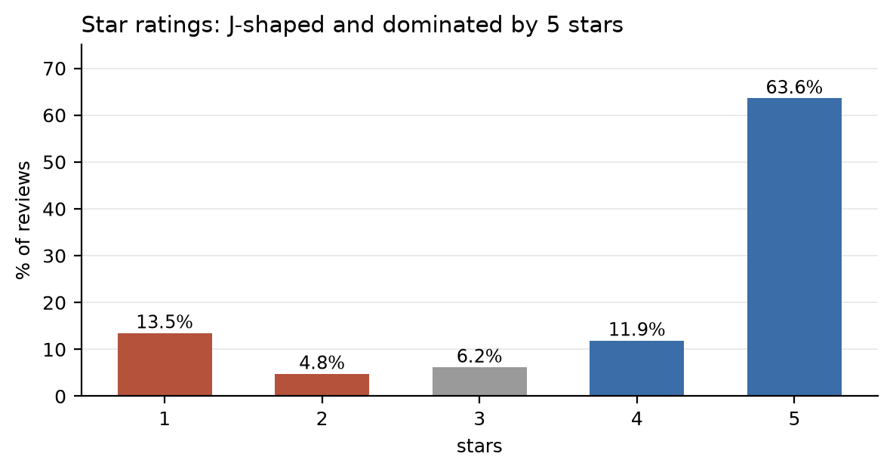
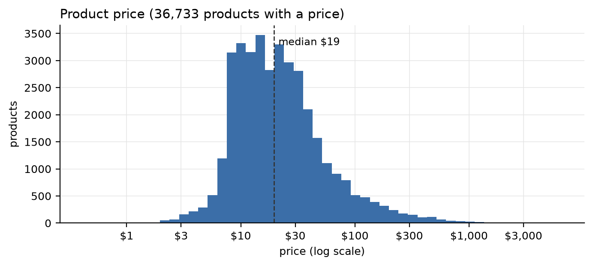
| متغیر | مرکز | شکل توزیع | پیامد |
|---|---|---|---|
| امتیاز (هدف) | میانه ۵ | چولگی منفی (۱٫۲۸-)؛ نقدهای ۵ ستاره ۱۳ برابر ۲ ستارهاند | «دقت» معیار مناسبی نیست؛ مدل «همیشه ۵» ۶۳٫۶٪ درست میگوید |
| طول نقد | میانه ۲۲ کلمه | چولهی راست شدید | میانه گزارش میشود |
| قیمت | میانه ۱۹ دلار | چولهی راست شدید | لگاریتم قیمت در فاز ۲ |
| تعداد نقد هر محصول | میانه ۲ | چولهی راست شدید | لگاریتم؛ خطر نشت (بخش ۱۱) |
| رأی «مفید بود» | میانه ۰ | چولهی راست شدید (بیشینه ۳٬۰۲۴) | هرگز ویژگی مدل نیست |
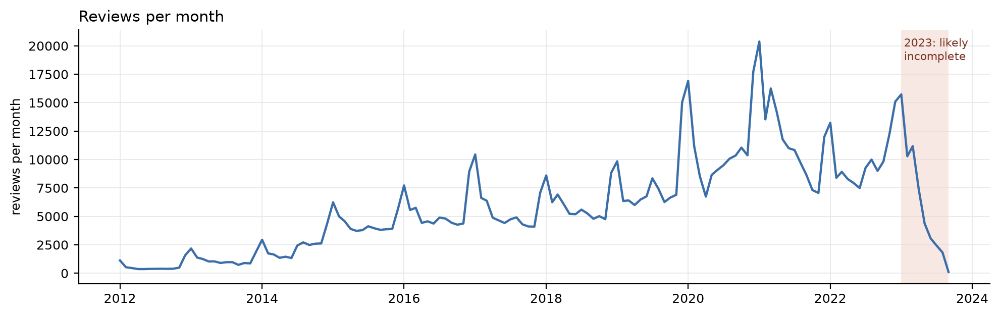
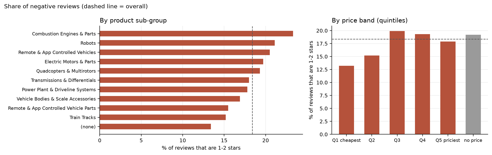
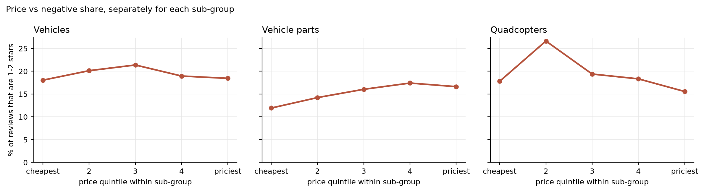
پیامد تعامل. اثر قیمت را نمیتوان مستقل از نوع محصول تفسیر کرد. به همین دلیل، در روش ارزیابی تغییر امتیاز هر محصول در مقایسه با همزیرگروههایش سنجیده میشود (بخش ۱۲).
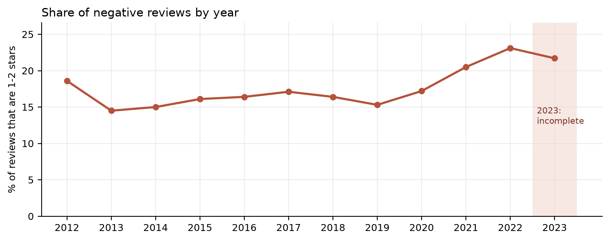
مهمترین یافته برای طراحی آزمایش. چون سهم نقد منفی در طول زمان تغییر کرده، مدلی که روی سالهای قدیم آموزش ببیند و روی سالهای جدید آزمون شود، با نسبت متفاوتی از نقدهای منفی روبهرو میشود. این یافته در انتخاب تقسیم زمانی (بخش ۱۱) و معیاری که به سهم کلاسها حساس نباشد (بخش ۱۲) لحاظ شد.
همهی روابط این بخش ارتباطاند، نه علت.
گزارش برای «یک محصول در یک بازهی ۳ ماهه» ساخته میشود. اولویتبندی از روی چند نقد معدود قابل اعتماد نیست، و آستانهی خیلی بالا هم بیشتر محصولات را حذف میکند. تصمیمهای زیر در تسک ۱۰ (۵ آبان) پیش از مدلسازی ثبت شدند:
| تصمیم | انتخاب | دلیل |
|---|---|---|
| طول بازه | ۳ ماه تقویمی | تعادل بین بهروز بودن و تعداد نقد؛ ۱ و ۶ ماه در فاز ۴ برای تحلیل حساسیت |
| حداقل نقد | ۲۰ نقد | در دورهی تحلیل ۵٬۰۷۰ واحد از ۱٬۴۲۶ محصول، که ۳۸٪ نقدها را پوشش میدهند. آستانه فقط روی تعداد نقد است، نه امتیاز؛ انتخاب بر اساس متغیر هدف ارزیابی را خوشبینانه میکند |
| شروع | ژانویهی ۲۰۱۵ | پیش از آن کمتر از ۲۰۰ واحد واجد شرایط در سال |
| پایان | مارس ۲۰۲۳ | سهماههی دوم ۲۰۲۳ فقط ۶۲٪ و سهماههی سوم ۱۶٪ نقدهای همان بازه در ۲۰۲۲ را دارند |
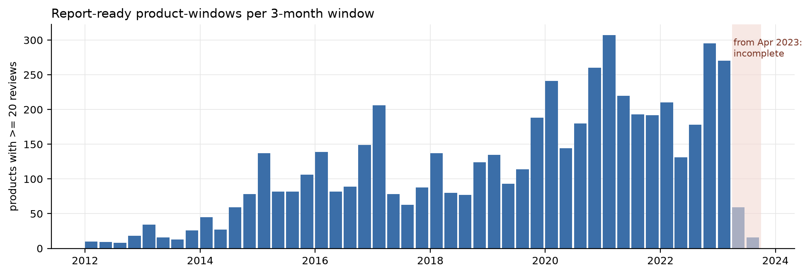
یادداشت سازگاری اعداد: عدد ۵٬۶۱۰ در اسکن اولیه (پیش از حذف تکراریها) و ۵٬۵۲۵ در نوتبوک ۶ (همهی سالها) به دادهی پیش از محدود کردن دوره مربوطاند. عدد مرجع ۵٬۰۷۰ است.
| بخش | بازه | نقد | محصول | واحد گزارش | سهم منفی | کاربرد |
|---|---|---|---|---|---|---|
| آموزش | ۲۰۱۵ تا ۲۰۲۰ | ۴۷۸٬۴۲۶ (۶۱٪) | ۴۳٬۶۴۲ | ۳٬۰۷۴ | ۱۶٫۵٪ | ساخت هر مرحلهی یادگرفتنی |
| اعتبارسنجی | ۲۰۲۱ | ۱۴۲٬۵۹۷ (۱۸٪) | ۲۲٬۴۹۶ | ۹۱۲ | ۲۰٫۵٪ | انتخاب مدل و تنظیم |
| آزمون | ژانویهی ۲۰۲۲ تا مارس ۲۰۲۳ | ۱۵۶٬۸۳۷ (۲۰٪) | ۲۷٬۴۳۴ | ۱٬۰۸۴ | ۲۲٫۶٪ | فقط یک بار، پایان فاز ۳ |
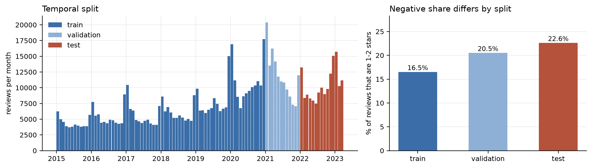
| خطر | چرا نشت دارد | راهکار |
|---|---|---|
| میانگین و تعداد امتیاز محصول | در ۲۰۲۳ از همهی نقدها، شامل نقدهای آینده، حساب شده؛ همبستگی ۰٫۶۷ با میانگین واقعی نقدها | هرگز ویژگی مدل نیست |
| رأی «مفید بود» | پس از انتشار نقد جمع میشود؛ میانگینش از ۱٫۲۷ (۲۰۱۵) به ۰٫۲۶ (۲۰۲۳) میرسد | هرگز ویژگی مدل نیست |
| تعداد کل نقد محصول | نقدهای آینده را میشمارد و با امتیاز مرتبط است | فقط نقدهای پیش از لحظهی پیشبینی |
| قیمت و نداشتن قیمت | در ۲۰۲۳ ثبت شده؛ نداشتن قیمت ممکن است یعنی «بعداً از فروش خارج شد» | مقایسهی مدل با و بدون ویژگیهای قیمت در فاز ۳ |
| تقسیم تصادفی | آیندهی محصولات آزمون وارد آموزش میشود | تقسیم زمانی |
| متن تکراری بین بخشها | مدل جواب را حفظ میکند | حذف تکراریها؛ همپوشانی ۷ نقد |
| یادگیری روی کل داده | واژهنامه، نرمالسازی و خوشههای جنبه از دادهی آزمون یاد گرفته میشوند | همهی مراحل یادگرفتنی فقط روی آموزش |
| تنظیم روی آزمون | انتخاب مدل یا آستانه با نمرهی آزمون | آزمون قفل است و یک بار استفاده میشود |
| انتخاب بر اساس متغیر هدف | مثلاً «فقط بازههایی که دستکم ۵ نقد منفی دارند» | آستانهی واحد گزارش فقط روی تعداد نقد |
ارزیابی در چهار لایه انجام میشود و پیش از مدلسازی ثبت شده است. لایههای ۱ و ۲ شرط لازماند: اگر جنبهها غلط استخراج شوند یا مدل امتیاز را نفهمد، پیشنهادها اعتبار ندارند. لایهی ۳ سنجش اصلی پیشنهادهای بهبود است.
| لایه | سؤال | معیار اصلی | معیارهای مکمل | خط مبنا |
|---|---|---|---|---|
| ۱. جنبه و جهت نظر (فاز ۲) | آیا جنبه و جهت نظر هر جمله درست تشخیص داده میشود؟ | macro-F1 جنبهها در برابر نمونهی برچسبخوردهی دستی | دقت جهت نظر برای جنبههای درستتشخیصدادهشده | جستوجوی کلمههای کلیدی |
| ۲. پیشبینی امتیاز (فاز ۳) | آیا مدل از روی متن امتیاز را درست پیشبینی میکند؟ | macro-MAE | MAE؛ F1 و AP نقد منفی | B5، با حد ۰٫۷۲۴ |
| ۳. درستی پیشنهادها (فاز ۴ و ۵) | آیا وزن هر جنبه با تغییر واقعی امتیاز در بازهی بعد سازگار است؟ | همبستگی رتبهای اسپیرمن بین تغییر پیشبینیشده و واقعی (نسبت به همزیرگروهها) | نرخ همجهتی تغییر | «پرتکرارترین شکایت = اولویت اول» |
| ۴. پایداری (فاز ۴) | آیا پیشنهادها نویز نیستند؟ | همبستگی رتبهای اولویتها بین بازههای متوالی | همپوشانی سه اولویت اول بین بازههای ۱، ۳ و ۶ ماهه | — |
دادهی لایهی ۳. برای هر محصول و دو بازهی متوالی t و t+1 که هر دو دستکم ۲۰ نقد دارند، روش ما در بازهی t پیشبینی میکند کاهش شکایت از هر جنبه چقدر امتیاز را تغییر میدهد، و تغییر واقعی در t+1 با آن مقایسه میشود. ۳٬۱۴۲ جفت از ۷۸۶ محصول داریم: آموزش ۱٬۸۳۹، اعتبارسنجی ۶۶۲ و آزمون ۶۴۱ (هر جفت به بخش بازهی t+1 تعلق دارد).
MAE یعنی میانگین فاصلهی امتیاز پیشبینیشده تا امتیاز واقعی، به ستاره. macro-MAE اول MAE را جدا برای هر امتیاز واقعی (۱ تا ۵) حساب میکند و بعد میانگین این پنج عدد را میگیرد. چون ۶۴٪ نقدها ۵ ستارهاند، با MAE معمولی مدل «همیشه ۵» (۰٫۹۹) از مدل «میانگین کل» (۱٫۲۲) بهتر به نظر میرسد، در حالی که روی نقدهای ۱ ستاره ۴ ستاره خطا دارد. این نقدها همان شکایتهاییاند که گزارش از آنها ساخته میشود. macro-MAE به هر امتیاز وزن برابر میدهد و به تغییر سهم نقدهای منفی بین سالها (۱۶٫۵٪ تا ۲۲٫۶٪) حساس نیست.
| خط مبنا | macro-MAE | MAE | F1 منفی | AP منفی |
|---|---|---|---|---|
| B0 همیشه ۵ | ۲٫۰۰ | ۰٫۹۹ | ۰ | ۰٫۲۰ |
| B1 میانگین کل | ۱٫۴۹ | ۱٫۲۲ | ۰ | ۰٫۲۰ |
| B2 میانگین زیرگروه | ۱٫۴۸ | ۱٫۲۲ | ۰ | ۰٫۲۱ |
| B3 سابقهی محصول (دستکم ۵ نقد در آموزش؛ وگرنه میانگین زیرگروه) | ۱٫۴۹ | ۱٫۱۴ | ۰٫۰۲ | ۰٫۳۰ |
| B4 فقط طول متن | ۱٫۴۵ | ۱٫۲۰ | ۰ | ۰٫۲۳ |
| B5 متن ساده: TF-IDF (کلمه و جفتکلمه) + Ridge | ۰٫۷۲ | ۰٫۵۵ | ۰٫۷۴ | ۰٫۸۷ |
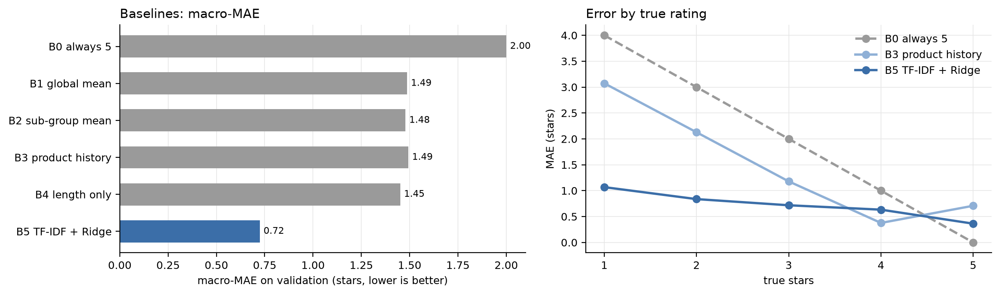
حد فاز ۳: مدل اصلی باید روی اعتبارسنجی macro-MAE کمتر از ۰٫۷۲۴ بگیرد، وگرنه پیچیدگیاش توجیهی ندارد. تنظیمات B5 عمداً تنظیم نشدهاند. در فاز ۳ نسخهی تنظیمشدهی B5 هم (فقط با اعتبارسنجی) گزارش میشود تا مقایسه منصفانه باشد.
| سؤال | قابل انجام است؟ | تصمیم | |
|---|---|---|---|
| ۱ | هشدار زودهنگام: از روی نقدهای ۳ ماه اخیر، آیا سهم نقد منفی محصول در ۳ ماه بعد بیشتر میشود؟ | بله: ۳٬۱۴۲ جفت بازهی متوالی؛ در ۳۰٫۱٪ جفتهای آموزش سهم منفی دستکم ۵ واحد درصد بالا رفته، پس هر دو حالت نمونهی کافی دارند | کنار گذاشته شد: میگوید «بدتر میشود» ولی نمیگوید چه چیزی را درست کن |
| ۲ | روند شکایتهای بازار: در کل بازار کنترل از راه دور، کدام جنبهها از ۲۰۱۵ تا ۲۰۲۳ سهم بیشتری از شکایتها گرفتهاند و افزایش سهم منفی با کدام جنبهها همراه بوده؟ | بله: ۷۷۷٬۸۶۰ نقد در دورهی تحلیل | بهعنوان سؤال اصلی کنار گذاشته شد: مخاطبش مدیر دسته است، نه صاحب یک محصول، و توصیفی است. در فاز ۴ بهعنوان تحلیل روند میآید |
| ۳ | اولویتبندی بهبود (سؤال اصلی، بخش ۱) | بله: ۵٬۰۷۰ واحد گزارش؛ ۶۴۱ جفت آزمون برای لایهی ۳ | انتخاب شد |
دلیل انتخاب سؤال ۳. (۱) از یک تصمیم واقعی پشتیبانی میکند: «با منابع محدود، اول کدام جنبه را درست کنم؟». (۲) قابل سنجش است: لایهی ۳ با جفت بازههای متوالی، در مقایسه با روش سادهی «پرتکرارترین شکایت». (۳) از هر سه منبع داده (متن، زمان و اطلاعات محصول) استفاده میکند. (۴) دو سؤال دیگر دور ریخته نمیشوند: سؤال ۲ در فاز ۴ میآید و دادهی سؤال ۱ همان دادهی ارزیابی لایهی ۳ است.
ریسک. همهچیز به درستی استخراج جنبهها (لایهی ۱) بستگی دارد. اگر روش ما از «پرتکرارترین شکایت» بهتر نباشد، همین نتیجه صادقانه گزارش میشود.
| مرحله | فایل |
|---|---|
| دانلود با ثبت اثر انگشت | src/download_data.py → data/download_manifest.json |
| شمارش و انتخاب زیرمجموعه | src/scan_category.py، src/build_subset.py |
| پاکسازی متن و تقسیم داده (مشترک بین همهی فازها) | src/text_utils.py، src/splits.py |
| ممیزی و تحلیل، به ترتیب | notebooks/01 تا 08 |
| تنظیمات مرکزی (دسته، زیرمجموعه، بازه، تقسیم، معیارها، seed=42) | configs/config.yaml |
| کارت پروژه و گزارش استفاده از هوش مصنوعی | PROJECT_CARD.md، AI_USAGE.md |
دادهی خام و پردازششده در مخزن قرار نمیگیرد. همهی آن با اسکریپتهای src/ از نو ساخته میشود. همهی اعداد این گزارش از خروجی همین نوتبوکها و فایلهای reports/phase1/ آمدهاند.
گام بعد (فاز ۲). (۱) پیشپردازش: حذف تکراریها، پاکسازی متن، تقسیم نقد به جمله و بررسی متنها و کاربران علامتخورده. (۲) کشف جنبهها با خوشهبندی بازنمایی جملهها، فقط روی دادهی آموزش. (۳) تشخیص جهت نظر برای هر جنبه، با توجه ویژه به منفیسازی. (۴) برچسبگذاری دستی یک نمونهی چند صد جملهای برای لایهی ۱ ارزیابی و مقایسه با جستوجوی کلمههای کلیدی.